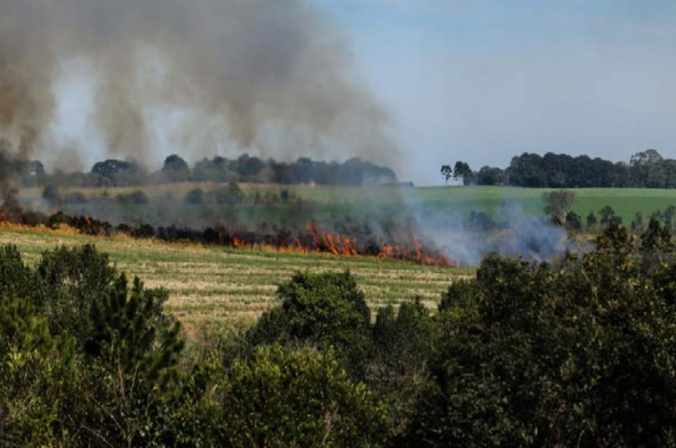

Pecuária é uma atividade econômica voltada para a criação de animais. A história da pecuária está ligada aos primórdios do planeta,quando os seres humanos domesticaram os animais, principalmente para facilitar a obtenção de alimentos e insumos.
* A pecuária é uma atividade econômica baseada na criação de animais para a produção de alimentos e de matérias-primas. * Historicamente, a pecuária teve grande importância no processo de ocupação do território assim como no desenvolvimento de diversas regiões do globo. * A pecuária leiteira é a responsável pela produção de leite, uma importante matéria-prima para a fabricação de alimentos variados. * A pecuária de corte está relacionada à criação de animais, como bovinos e suínos, para o abate. * A pecuária extensiva é uma modalidade de criação de animais caracterizada pelo uso de técnicas tradicionais de produção. * Já a pecuária intensiva é marcada pelo emprego de muitas inovações tecnológicas, que garantem uma elevada produtividade. * As atividades pecuárias resultam em graves problemas ambientais, como o desmatamento e a poluição de grandes áreas naturais.
A pecuária é considerada uma das práticas humanas mais antigas, sendo realizada desde períodos pré-históricos. Por meio do seu desenvolvimento nos tempos antigos, os seres humanos passaram a fixar-se no território, além de obter seu próprio alimento. A domesticação de animais foi fundamental para a iniciação da prática pecuária e, por consequência, a diminuição da dependência da coleta e da caça para a sobrevivência dos homens desse período. Com o passar dos anos, a pecuária se desenvolveu como uma importante atividade econômica, inclusive, como um meio de geração de renda para a população. A partir do advento das mudanças no espaço agrário, como a modernização das práticas pecuárias, houve uma forte expansão das atividades econômicas ligadas à criação de animais. Demais, esse cenário foi fomentado ainda pelo crescimento do consumo de carne entre as populações.
é caracterizada pela produção de leite. Esse alimento é o principal componente na fabricação de produtos como queijos e manteigas. A pecuária leiteira é bastante forte no Brasil, em especial, no estado de Minas Gerais.
* Pecuária de corte:está relacionada com a produção de carne. O Brasil é um dos grandes produtores e exportadores de carne. Os estados da região Centro-Oeste, por exemplo, têm grande tradição na pecuária de corte.
utiliza, no geral, técnicas tradicionais de criação de animais. Via de regra, os animais são criados soltos, com uma alimentação pouco balanceada e baseada em alimentos oferecidos pelo meio natural. A pecuária extensiva não utiliza métodos modernos de produção.
* Pecuária intensiva:aplica diversas técnicas de criação e manejo de animais baseadas no emprego de várias inovações tecnológicas, como a clonagem e a reprodução assistida. Os animais são criados confinados e recebem um tratamento diário baseado no uso de vários insumos agrícolas. A pecuária intensiva possui elevada produtividade.
A pecuária, apesar da sua grande importância estratégica e econômica, é uma atividade que implica graves problemas ambientais. A criação de animais altera de forma abrupta o meio natural, sendo responsável por um conjunto de impactos negativos no ambiente. Essas alterações se tornam ainda mais preocupantes em razão da emergência das questões ambientais atuais do planeta, marcadas pela forte intervenção do homem no meio, sendo a pecuária uma das principais causadoras desse cenário. A lista abaixo apresenta os principais problemas ambientais causados pela pecuária: * O desmatamento de grandes áreas de vegetação nativa para a instalação de atividades relacionadas à criação de animais. * A intensificação da ocorrência de queimadas, empregadas como ferramenta de limpeza de terrenos para a formação de áreas de pastagem. * A grande emissão de poluentes atmosféricos, seja por meio dos processos de desmatamento e queimadas, seja pelo lançamento de gases pelos animais. * A poluição da água e do solo em razão da disposição irregular de produtos químicos e rejeitos de animais oriundos da atividade pecuária. * A compactação do solo provocada pelo pisoteio dos animais, o que diminui a capacidade de infiltração da água no solo e potencializa os processos erosivos.
A pecuária no Brasil possui uma grande tradição e remete às práticas de ocupação do país durante o processo de colonização. A partir da chegada dos portugueses ao território brasileiro, foram instituídas diversas práticas agropecuárias, com destaque para a criação de animais para usos variados. A pecuária, inclusive, foi um motor para a ocupação de regiões, como o interior nordestino e o extremo sul brasileiro Mesmo assim, ela tinha nesse período um papel secundário na economia brasileira, em que predominavam os cultivos agrícolas.